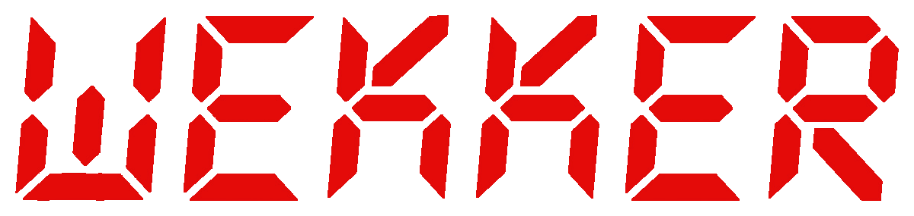
Wekker is ynspirearre op it ferhaal "In frou moat harsels rêde" fan Sipke de Schiffart.
Dieuwke har dream feroaret yn in nachtmerry as se troch in blaffende hûn gjin each mear ticht docht en se twongen wurdt om de rêst te werstellen.

Wekker is ynspirearre op it ferhaal "In frou moat harsels rêde" fan Sipke de Schiffart.
Dieuwke har dream feroaret yn in nachtmerry as se troch in blaffende hûn gjin each mear ticht docht en se twongen wurdt om de rêst te werstellen.
As de asosjale Gjaltema en syn blaffende Mechelske herder neist Dieuwke en Johan komme te wenjen, is it dien mei de rêst. De konstante lûdsoerlêst ferpest Dieuwke har sliep.
In petear mei Gjaltema einiget yn in deasbedriging. Wanhopich besiket Dieuwke sels yn te gripen, mar troch it slieptekoart wurdt har tinken trûbel en de sitewaasje hieltyd wanhopiger.
As Johan útfalt, stiet se der allinnich foar en set se alles op alles om de hûn it swijen op te lizzen.
Ambisjeus en enerzjyk, mar geastlik útput troch slieptekoart. Har dream wurdt in nachtmerry.
Leaf, rêstich en ûnderskat, oant syn eigen grinzen berikt wurde. Besjocht de ûntwikkelingen mei groeiende ûnrêst.
In ferhurde en isolearre man dy't net mear wit wat rêst betsjut. Syn hûn is syn ienige geselskip.
Produsint — Omrop Fryslân Tsjil
Senario en rezjy — Halbe-Piter Claus
Script en kontinuïteit — Jasper Bargboer
Produksje en opnamelieding — Laura Oosterloo
Produksje-assistinten — Marieke de Boer, Stefan Dijkstra, Gwen Hettema
Dramaturzjy — Jörgen Scholtens
Einredaksje — Janjelle Ringnalda
Kamera — Jorrit Meinsma
Kamera-assistint — Lisa Dijkstra
Clapperloader — Iris Faber
Lûd — Menno Knevel
Lûds-assistint — Dennis Wijmans
Audioneibewurking — Linze Valk
Dolby Atmos-audioneibewurking — Geart Dykstra, Dylan Luinga
Gaffer — Twan Bosman
Ljocht-assistint — Quincy Bruinsma
Art Director & Production Design — Yvonne Dijkstra
Set-assistinten — Anna Oltenau, Lasse Stapensau, Wisse Kersten, Jelina Stelwagen
Klean — Mathilde van der Hoop
Hier, make-up & specials — Ynke Huver
Klean- en fizagy-assistint — Sjoukje Gerbrandi
Montaazje & kleurkorreksje — Jelmer Douma
Spesjale effekten & grafyk — Julian Lankhorst
Muzyk — Kees van der Meer
Gitaar — Nathaniel van Veenen
Kontrabas — Jan Reurd Oosterhaven
Undertiteling — Ingeborg Wortman
Digitale logistyk — Michel Visser, Roald Koger, Ronald Talma
Argyfbylden — Tetsje de Groot
Tsjil, it edukative jongerenplatfoarm fan Omrop Fryslân, soarget foar lesmateriaal dat oanslút by it Frysk yn it ûnderwiis, fan basisskoalle oant mbû.
Wekker is de earste film yn in rige fan trije en is spesjaal ûntwikkele foar it fak boargerskip. De film is in swarte komeedzje oer egoïsme, kommunikaasje en grinzen, en jout studinten oanlieding om nei te tinken oer morele keuzes en maatskiplike ferantwurdlikens.
It projekt makket diel út fan it Praktoraat Frysk en Meartaligens, dat him rjochtet op it yntegrearjen fan de Fryske taal en kultuer yn alle opliedingen fan it mbû.
Foar de realisaasje fan Wekker wurken studinten mei oan it ûntwikkeljen fan it ferhaal. By de opnamen waarden hast alle funksjes dield tusken professionals en studinten, sadat se út de earste hân ûnderfine koene hoe't in film ûntstiet — fan senario oant draaidei.
Foar skoallen ferskine in lesbrief en in boekje mei it ferhaal In frou moat harsels rêde fan Sipke de Schiffart, dêr't de film op basearre is.
Studinten fan Firda en NHL Stenden wurken mei oan dizze produksje.
Fan senario oant draaidei — in unyke learkâns foar de filmmakkers fan moarn.
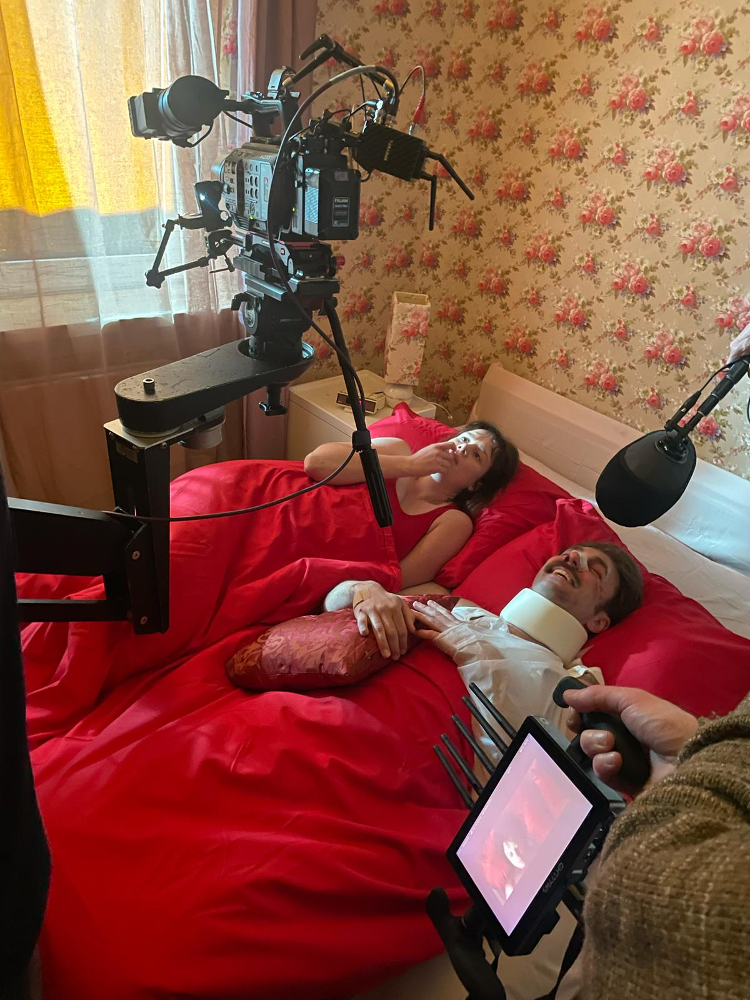
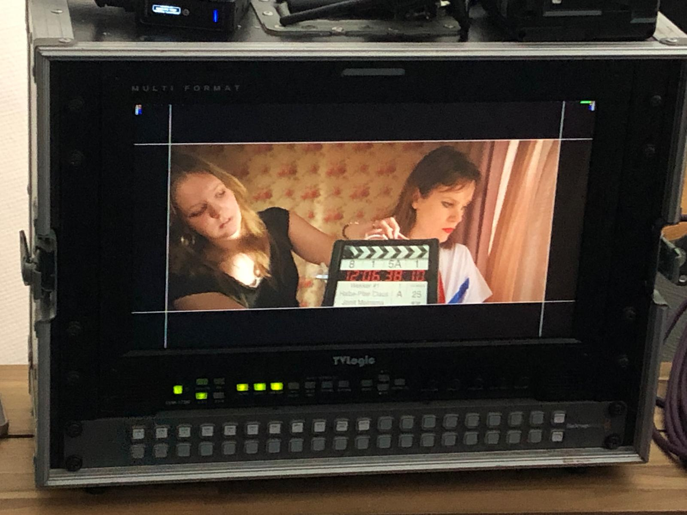
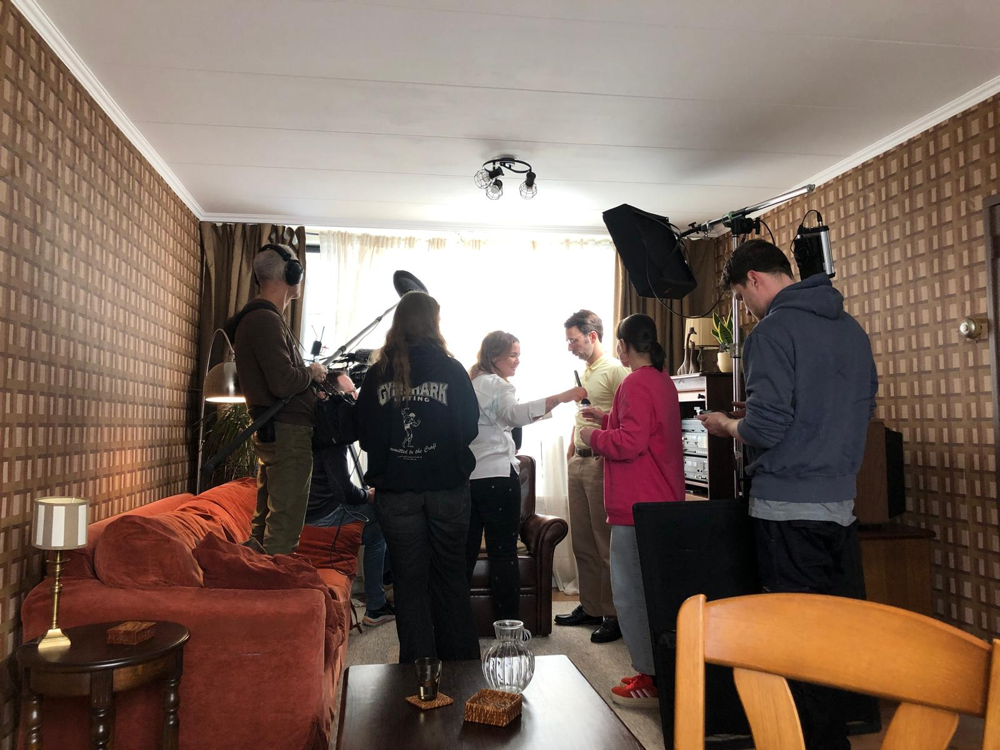
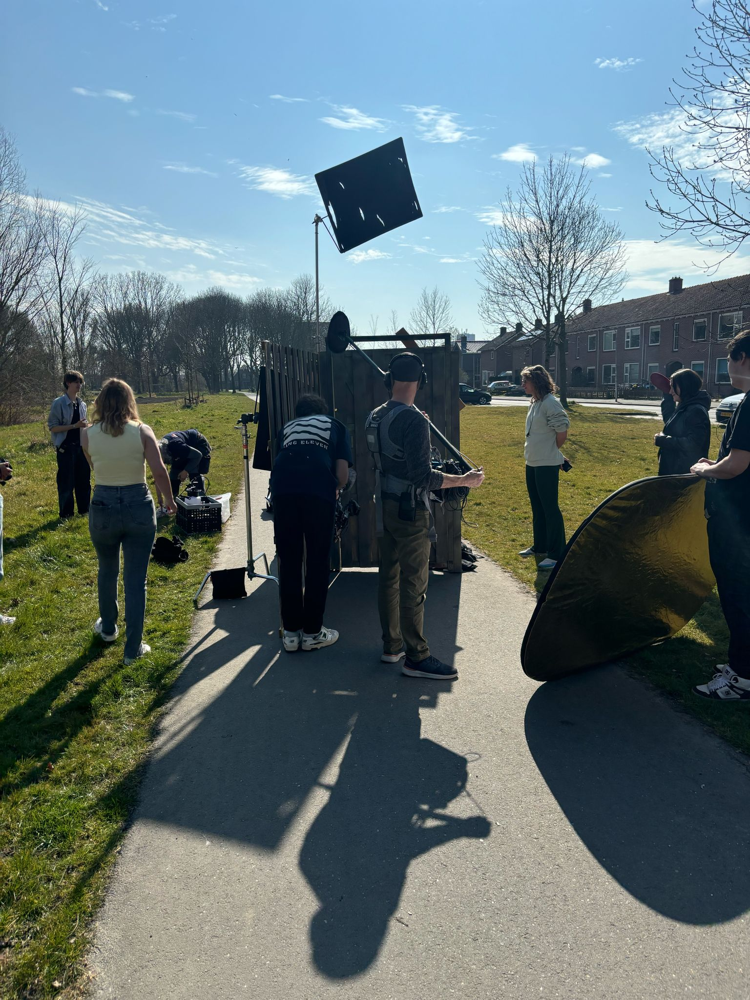
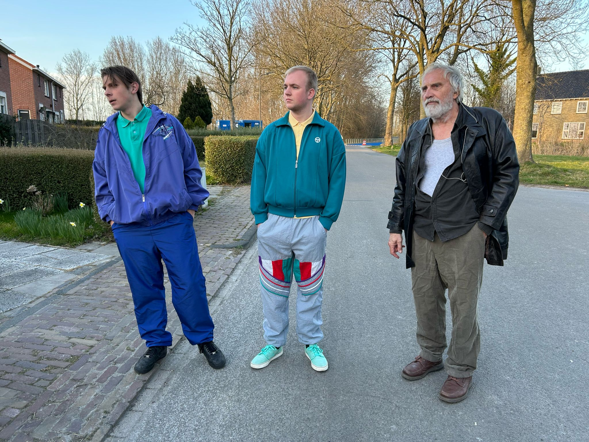
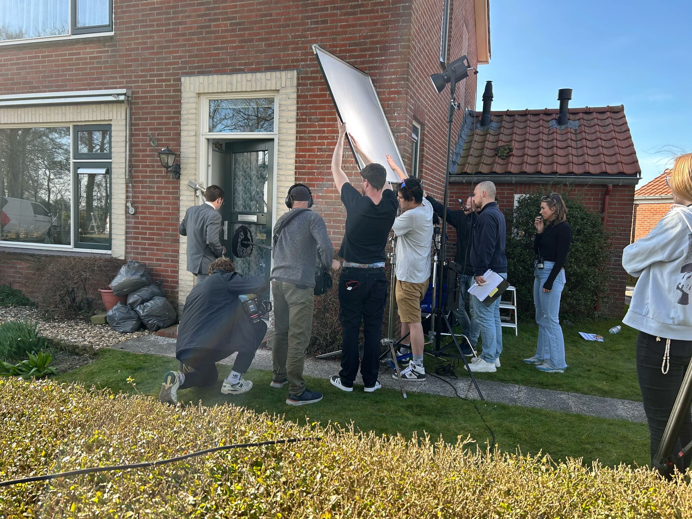
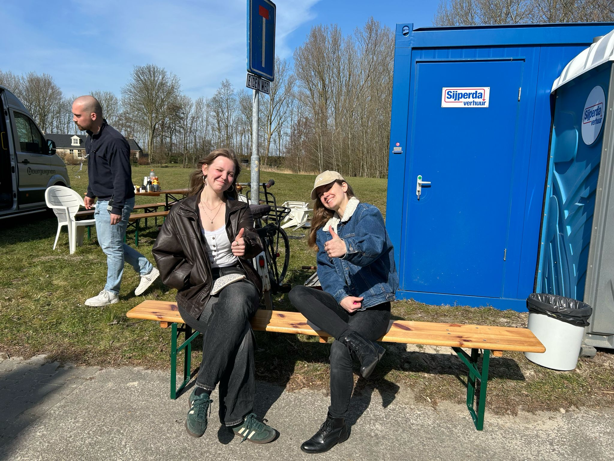
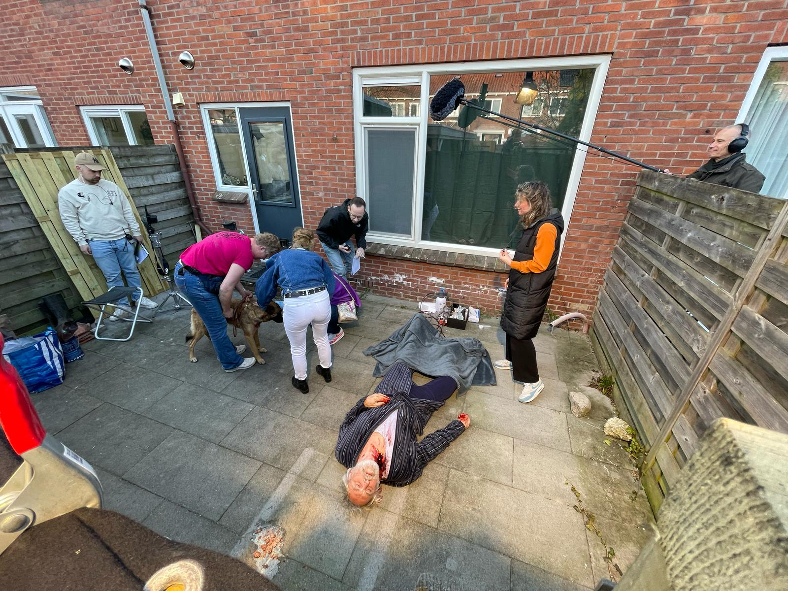
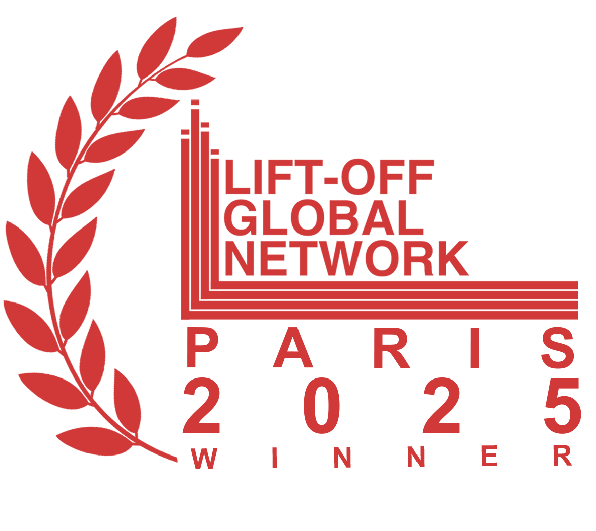
Wekker is de winner fan it Lift-Off Film Festival Paris. It is de heechst beoardiele film fan it festival en stiet no op de shortlist foar de Season Awards by Pinewood Studios, yn de kategoryen Best Acting Ensemble en Best Art Direction.
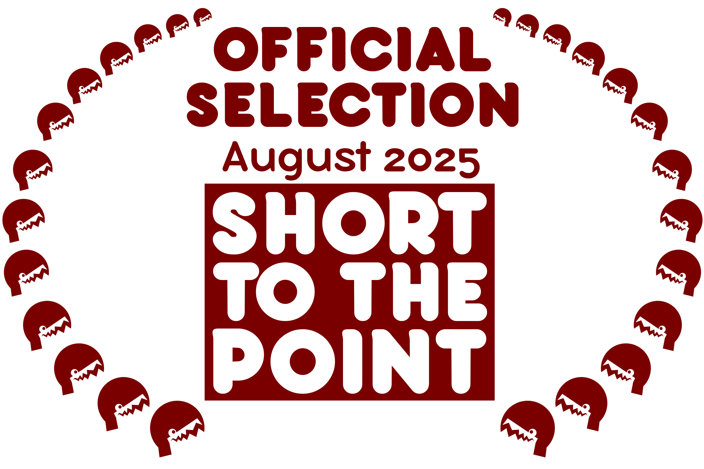
Short to the Point Festival
July & August 2025
Foar parse-ynformaasje, ûnderwiisfraachen of screenings: